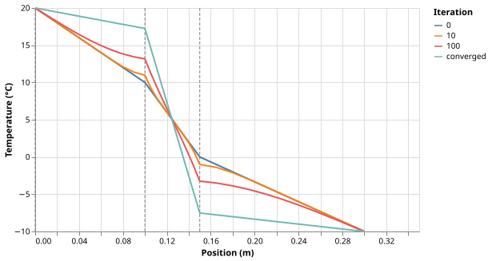
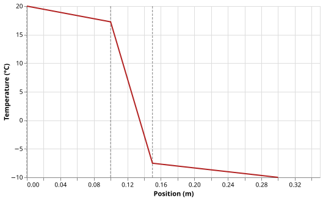

Heat Conduction Through a Composite Wall
23.1 The Problem
- A wall made of layers of different materials like brick or insulation conducts heat from the warm interior of a building to the cold exterior
- Given the thickness and thermal conductivity of each layer and the temperatures at the two surfaces, we want the steady-state temperature at every point in the wall and the heat flux (power per unit area) passing through it
- This calculation is used to size insulation and check compliance with building codes
23.2 The Physics
- In steady state the temperature \(T(x)\) no longer changes with time, so the heat equation reduces to:
\[\frac{d}{dx}\!\left(k(x)\,\frac{dT}{dx}\right) = 0\]
- \(k(x)\) is the thermal conductivity at position \(x\)
- It is piecewise constant, i.e., has one value per layer
- Within each uniform layer \(d^2T/dx^2 = 0\), so \(T\) is linear
- The slope (and therefore the flux) is constant within any single material
- At every layer interface both the temperature and the heat flux must be continuous: \(T\) does not jump and \(k_L\,dT/dx\) on the left equals \(k_R\,dT/dx\) on the right
23.3 Thermal Resistance
- The thermal resistance of a uniform layer is \(R_i = L_i / k_i\) (\(\text{m}^2\,\text{K}\,\text{W}^{-1}\))
- For layers in series the resistances add: \(R_\text{total} = \sum_i R_i\).
- The uniform heat flux through the wall is:
\[q = \frac{T_\text{left} - T_\text{right}}{R_\text{total}}\]
- The temperature at each interface follows by subtracting \(q\,R_i\) from the previous value
def analytic_solution(
widths=LAYER_WIDTHS, conductivities=LAYER_K, t_left=T_LEFT, t_right=T_RIGHT
):
"""Exact steady-state solution via thermal resistance.
For a composite wall the total thermal resistance is:
R_total = sum_i ( L_i / k_i ) (m² K W⁻¹)
and the uniform heat flux is:
q = (T_left - T_right) / R_total (W m⁻²)
The temperature at each layer interface follows from subtracting q * R_i
in sequence from T_left.
"""
resistances = [w / k for w, k in zip(widths, conductivities)]
r_total = sum(resistances)
q = (t_left - t_right) / r_total
interface_temps = [t_left]
for r in resistances:
interface_temps.append(interface_temps[-1] - q * r)
return q, resistances, interface_tempsMatch each physical quantity to its definition.
| Quantity | Definition |
|---|---|
| Thermal conductivity \(k\) | Material property: heat flow per unit area per unit temperature gradient (\(\text{W}\,\text{m}^{-1}\,\text{K}^{-1}\)) |
| Thermal resistance \(R\) | Geometry + material: temperature drop per unit flux for one layer (\(\text{m}^2\,\text{K}\,\text{W}^{-1}\)) |
| Heat flux \(q\) | Power per unit wall area flowing through the wall in steady state (\(\text{W}\,\text{m}^{-2}\)) |
| Steady state | Condition where \(\partial T/\partial t = 0\) everywhere in the wall |
23.4 Discretizing the Wall
- We place \(n_\text{per layer}\) cells in each layer
- Nodes sit at cell boundaries, including the shared interface between adjacent layers), giving \(n_\text{layers} \times n_\text{per layer} + 1\) nodes in total
- Because every segment between neighbouring nodes lies entirely inside one material, each segment has a well-defined conductivity
- So no averaging formula is needed at layer interfaces
# Three-layer composite wall: brick | mineral wool insulation | concrete
LAYER_WIDTHS = [0.10, 0.05, 0.15] # layer thicknesses (m)
LAYER_K = [0.72, 0.04, 1.20] # thermal conductivities (W m⁻¹ K⁻¹)
LAYER_NAMES = ["brick", "insulation", "concrete"]
T_LEFT = 20.0 # inner-surface temperature (°C)
T_RIGHT = -10.0 # outer-surface temperature (°C)
# N_PER_LAYER cells per layer. More cells → smaller discretisation error.
# 20 cells per layer is sufficient to recover the exact piecewise-linear solution
# of the steady-state heat equation to numerical-precision.
N_PER_LAYER = 20
# Convergence tolerance for Jacobi iteration: iteration stops when the maximum
# change in any nodal temperature between successive sweeps falls below this value.
# 1e-6 °C is well below measurement precision for building physics calculations.
TOLERANCE = 1e-6def build_grid(widths=LAYER_WIDTHS, conductivities=LAYER_K, n_per_layer=N_PER_LAYER):
"""Return (x, k_seg) for a node-centred composite-wall grid.
x : positions of all nodes (m); length n_layers * n_per_layer + 1
k_seg : conductivity of the segment to the RIGHT of each node (W m⁻¹ K⁻¹);
length n_layers * n_per_layer (one per inter-node gap)
Each layer is divided into n_per_layer equal cells. The rightmost node of
one layer is shared with the leftmost node of the next, so interface nodes
appear exactly once. Every segment between adjacent nodes lies entirely
inside one material, so no harmonic-mean formula is needed.
"""
x_parts, k_seg = [], []
x_start = 0.0
for i, (width, kval) in enumerate(zip(widths, conductivities)):
xs = np.linspace(x_start, x_start + width, n_per_layer + 1)
# Skip the first node for all but the first layer to avoid duplication.
x_parts.append(xs if i == 0 else xs[1:])
# Each of the n_per_layer segments inside this layer has conductivity kval.
k_seg.extend([kval] * n_per_layer)
x_start += width
return np.concatenate(x_parts), np.array(k_seg)Put these grid-construction steps in the correct order.
- Compute node positions within each layer using
np.linspace - Skip the first node of each layer after the first (it is shared with the previous layer)
- Record the conductivity of each inter-node segment
- Concatenate node arrays to form the full grid
x
23.5 Iterative Relaxation
- Rather than assembling and solving a linear system, we find the steady-state temperatures by repeatedly applying a simple averaging rule until the profile stops changing
- This is the same “keep updating until convergence” strategy as Euler's method for ordinary differential equations.
- At each interior node \(i\), the steady-state heat balance requires:
\[k_{i-1}\,\frac{T_{i-1} - T_i}{\Delta x_\text{left}} + k_i\,\frac{T_{i+1} - T_i}{\Delta x_\text{right}} = 0\]
- Solving for \(T_i\) gives an update rule that is a weighted average of the two neighbours:
\[a = \frac{k_{i-1}}{\Delta x_\text{left}}, \quad b = \frac{k_i}{\Delta x_\text{right}}, \quad T_i \leftarrow \frac{a\,T_{i-1} + b\,T_{i+1}}{a + b}\]
- \(k_{i-1}\) is the conductivity of the segment to the left of node \(i\), \(k_i\) is the conductivity of the segment to the right, and \(\Delta x_\text{left}\) and \(\Delta x_\text{right}\) are the distances to the neighbouring nodes
- Both conductivity and spacing appear in the weights
- A high-conductivity or narrow segment “pulls” the node temperature toward the neighbour on that side more strongly
- The two boundary temperatures \(T_0 = T_\text{left}\) and \(T_N = T_\text{right}\) are fixed throughout
- After each full sweep over all interior nodes, we check the maximum change
- If \(\max_i |T_i^\text{new} - T_i^\text{old}| < \varepsilon\) we stop
- The threshold \(\varepsilon\) (
TOLERANCE) is set to \(10^{-6}\) °C, which is far smaller than any physical measurement uncertainty - This method is called Jacobi iteration
def jacobi_solve(x, k_seg, t_left=T_LEFT, t_right=T_RIGHT, tolerance=TOLERANCE):
"""Solve for steady-state temperatures using Jacobi (relaxation) iteration.
Starting from a linear temperature profile as an initial guess, each interior
node i is updated to the value that balances the heat fluxes on both sides.
The steady-state heat balance at node i is:
k[i-1] * (T[i-1] - T[i]) / dx_left + k[i] * (T[i+1] - T[i]) / dx_right = 0
Solving for T[i] gives a weighted average of the two neighbours:
a = k[i-1] / dx_left (weight for left neighbour)
b = k[i] / dx_right (weight for right neighbour)
T_new[i] = (a * T[i-1] + b * T[i+1]) / (a + b)
The weights combine both the conductivity and the node spacing so that the
update is correct even when segments in different layers have different lengths.
Iteration continues until max(|T_new - T_old|) < tolerance.
Boundary nodes are fixed throughout (Dirichlet conditions).
Returns (T, n_iters) — the converged temperature array and the number of
iterations taken.
"""
n = len(x)
# Linear profile as starting guess: physically reasonable and reduces
# the number of iterations needed compared with a flat (uniform) guess.
T = np.linspace(t_left, t_right, n)
n_iters = 0
while True:
T_new = T.copy()
for i in range(1, n - 1):
dx_left = x[i] - x[i - 1]
dx_right = x[i + 1] - x[i]
a = k_seg[i - 1] / dx_left # conductivity of segment [i-1, i]
b = k_seg[i] / dx_right # conductivity of segment [i, i+1]
T_new[i] = (a * T[i - 1] + b * T[i + 1]) / (a + b)
n_iters += 1
if np.max(np.abs(T_new - T)) < tolerance:
return T_new, n_iters
T = T_newAfter many Jacobi sweeps on a single uniform layer (one conductivity, equal node spacing throughout), what temperature profile does the solution converge to?
- A straight line from \(T_\text{left}\) to \(T_\text{right}\).
- Correct: with equal conductivities and equal spacing, the weights \(a = b = k/\Delta x\) cancel and the update rule reduces to \(T_i \leftarrow (T_{i-1} + T_{i+1})/2\), so every interior node ends up exactly halfway between its two neighbours — the discrete condition for a linear profile.
- The temperature of the warmer boundary at every interior node.
- Wrong: the boundary conditions fix only the two end nodes; interior nodes are updated by averaging neighbours, which pulls them toward an intermediate value.
- An exponential decay from \(T_\text{left}\) to \(T_\text{right}\).
- Wrong: exponential profiles arise in transient (time-dependent) heat conduction, not in the steady state of a uniform material.
- A profile that depends on the initial guess and never changes.
- Wrong: Jacobi iteration converges to the same steady-state solution regardless of the starting guess (as long as the boundary conditions are fixed).
23.6 Convergence Behaviour
- A good starting guess speeds convergence
- We use a linear profile from \(T_\text{left}\) to \(T_\text{right}\), which is already the exact answer for a uniform wall
- For the three-layer wall the iteration typically converges in a few hundred sweeps
- The figure below shows snapshots at iterations 0, 10, 100, and the converged solution

23.7 Solving and Plotting the Profile
def solve_temperatures(
widths=LAYER_WIDTHS,
conductivities=LAYER_K,
t_left=T_LEFT,
t_right=T_RIGHT,
n_per_layer=N_PER_LAYER,
):
"""Return (x, T) — grid positions and steady-state temperatures (°C)."""
x, k_seg = build_grid(widths, conductivities, n_per_layer)
T, _ = jacobi_solve(x, k_seg, t_left, t_right)
return x, T
23.8 Heat Flux Through Each Layer
- In steady state the heat flux \(q = -k\,dT/dx\) is the same in every layer
- We compute it directly from the numerical temperature gradient in each layer’s segments
def layer_heat_flux(x, T, k_seg, widths=LAYER_WIDTHS):
"""Return the heat flux (W m⁻²) in each layer.
Flux in segment j: q_j = -k_seg[j] * (T[j+1] - T[j]) / (x[j+1] - x[j]).
In steady state q is constant everywhere; averaging over each layer's
segments reduces discretisation noise near boundaries.
"""
fluxes = []
x_start = 0.0
seg = 0 # running segment index
for width, kval in zip(widths, LAYER_K):
x_end = x_start + width
layer_q = []
while seg < len(k_seg) and x[seg + 1] <= x_end + 1e-12:
q = -k_seg[seg] * (T[seg + 1] - T[seg]) / (x[seg + 1] - x[seg])
layer_q.append(q)
seg += 1
fluxes.append(float(np.mean(layer_q)))
x_start = x_end
return np.array(fluxes)23.9 Testing
- Grid node count
- With \(n\) layers and \(n_\text{per layer}\) cells each, the grid must contain exactly \(n \times n_\text{per layer} + 1\) nodes. The \(+1\) accounts for the shared right-boundary node.
- Grid extent
- The first node must be at \(x = 0\) and the last at \(x = \sum_i L_i\). An off-by-one in the grid construction would violate this.
- Boundary temperatures
-
The solver must return exactly
T_LEFTandT_RIGHTat the two ends. these are fixed throughout the iteration, not approximations. - Single layer is linear
- For a single uniform layer the exact solution is a straight line from \(T_\text{left}\) to \(T_\text{right}\). Jacobi iteration converges to this profile because the update rule \(T_i \leftarrow (T_{i-1} + T_{i+1})/2\) has the linear profile as its only fixed point.
- Convergence is reached
-
After the solver returns, applying one more Jacobi sweep must produce a change smaller than
TOLERANCE. This directly tests the stopping criterion. - Flux constant across layers
- Conservation of energy in steady state requires the same heat flux in every layer. Per-layer flux averages must match the analytic value within 1%.
- Interface temperature matches analytic
- The temperatures at the layer boundaries returned by the solver must match the analytic values from the thermal-resistance formula to better than \(10^{-3}\) °C. The remaining error is dominated by the finite node spacing, not by iteration error, so any deviation larger than this indicates a conductivity-assignment or grid-construction bug.
- Linearity in \(\Delta T\)
-
Doubling the temperature difference across the wall must double the heat flux. This tests that
analytic_solutionis free of any nonlinear terms. - Flux continuity at interfaces
- At every layer interface, the heat flux computed from the last segment of the left layer must equal the flux computed from the first segment of the right layer to within 0.1% of the analytic flux. This verifies that Jacobi iteration correctly enforces \(k_1\,\Delta T_1 / \Delta x_1 = k_2\,\Delta T_2 / \Delta x_2\) at each boundary.
import numpy as np
import pytest
from heatwall import (
build_grid,
jacobi_solve,
solve_temperatures,
layer_heat_flux,
analytic_solution,
LAYER_WIDTHS,
T_LEFT,
T_RIGHT,
N_PER_LAYER,
TOLERANCE,
)
def test_grid_node_count():
# Each layer contributes N_PER_LAYER cells and shares boundary nodes,
# giving n_layers * N_PER_LAYER + 1 nodes total.
x, k_seg = build_grid()
n_layers = len(LAYER_WIDTHS)
assert len(x) == n_layers * N_PER_LAYER + 1
assert len(k_seg) == n_layers * N_PER_LAYER
def test_grid_covers_full_wall():
# First node must be at x=0; last at the total wall thickness.
x, _ = build_grid()
assert x[0] == pytest.approx(0.0)
assert x[-1] == pytest.approx(sum(LAYER_WIDTHS), rel=1e-10)
def test_boundary_temperatures_enforced():
# The solver must return exactly T_LEFT and T_RIGHT at the two wall surfaces.
x, T = solve_temperatures()
assert T[0] == pytest.approx(T_LEFT, abs=1e-10)
assert T[-1] == pytest.approx(T_RIGHT, abs=1e-10)
def test_single_layer_is_linear():
# For a single uniform layer the steady-state profile is exactly linear.
# Jacobi iteration on a uniform grid with equal conductivities converges to
# the linear profile because each node settles at the mean of its two neighbours,
# which is the discrete condition for linearity.
x, T = solve_temperatures(widths=[0.10], conductivities=[0.72])
T_exact = np.linspace(T_LEFT, T_RIGHT, len(x))
# Jacobi converges to within TOLERANCE per node; max error across all nodes
# is bounded by a small multiple of TOLERANCE for a linear profile.
assert np.allclose(T, T_exact, atol=100 * TOLERANCE)
def test_convergence_is_reached():
# After jacobi_solve returns, the maximum change between one more sweep and
# the returned solution must be below TOLERANCE, confirming convergence.
x, k_seg = build_grid()
T, _ = jacobi_solve(x, k_seg)
n = len(x)
T_check = T.copy()
for i in range(1, n - 1):
dx_left = x[i] - x[i - 1]
dx_right = x[i + 1] - x[i]
a = k_seg[i - 1] / dx_left
b = k_seg[i] / dx_right
T_check[i] = (a * T[i - 1] + b * T[i + 1]) / (a + b)
assert np.max(np.abs(T_check - T)) < TOLERANCE
def test_flux_constant_across_layers():
# In steady state q = -k dT/dx is uniform throughout the wall.
# All per-layer flux averages must match the analytic value within 1%.
x, T = solve_temperatures()
_, k_seg = build_grid()
fluxes = layer_heat_flux(x, T, k_seg)
q_analytic, _, _ = analytic_solution()
assert np.allclose(fluxes, q_analytic, rtol=0.01), (
f"Layer fluxes {np.round(fluxes, 4)} not all close to analytic {q_analytic:.4f} W/m²"
)
def test_numeric_matches_analytic_flux():
# Mean numerical flux must match the analytic value to within 0.1%.
x, T = solve_temperatures()
_, k_seg = build_grid()
fluxes = layer_heat_flux(x, T, k_seg)
q_analytic, _, _ = analytic_solution()
assert abs(fluxes.mean() - q_analytic) / abs(q_analytic) < 0.001
def test_numeric_matches_analytic_interface_temps():
# Numerically solved temperatures at layer interfaces must match the
# analytic values. The tolerance of 1e-3 °C is conservative: Jacobi
# iteration converges to within TOLERANCE (1e-6) per node, and the small
# remaining error at interface nodes is dominated by the finite node spacing
# rather than iteration error. Any deviation larger than 1e-3 °C indicates
# a conductivity-assignment or grid-construction bug.
x, T_numeric = solve_temperatures()
_, _, interface_temps = analytic_solution()
x_interfaces = np.cumsum([0.0] + LAYER_WIDTHS)
for x_iface, T_analytic in zip(x_interfaces, interface_temps):
j = np.argmin(np.abs(x - x_iface))
assert abs(T_numeric[j] - T_analytic) < 1e-3, (
f"At x={x_iface:.3f} m: numeric {T_numeric[j]:.6f}°C, "
f"analytic {T_analytic:.6f}°C"
)
def test_higher_flux_for_larger_delta_T():
# Doubling the temperature difference must double the heat flux (linearity).
q1, _, _ = analytic_solution(t_left=20.0, t_right=-10.0)
q2, _, _ = analytic_solution(t_left=40.0, t_right=-20.0)
assert q2 == pytest.approx(2.0 * q1, rel=1e-6)
def test_flux_continuity_at_interfaces():
# At every layer interface, heat flux continuity requires:
# k_left * dT/dx_left = k_right * dT/dx_right
# We check this for the brick-insulation and insulation-concrete interfaces
# by computing the flux in the last segment of the left layer and the first
# segment of the right layer; they must agree within 1% of the analytic flux.
x, T = solve_temperatures()
_, k_seg = build_grid()
q_analytic, _, _ = analytic_solution()
# Segment indices at each interface: the last segment of layer l ends at
# the interface node; segment index = cumulative N_PER_LAYER across layers.
layer_seg_counts = [N_PER_LAYER] * len(LAYER_WIDTHS)
cumulative = np.cumsum(layer_seg_counts)
for iface in range(len(LAYER_WIDTHS) - 1):
# Last segment of left layer
seg_l = cumulative[iface] - 1
q_l = -k_seg[seg_l] * (T[seg_l + 1] - T[seg_l]) / (x[seg_l + 1] - x[seg_l])
# First segment of right layer
seg_r = cumulative[iface]
q_r = -k_seg[seg_r] * (T[seg_r + 1] - T[seg_r]) / (x[seg_r + 1] - x[seg_r])
# Both fluxes must equal the analytic value to within 1%
assert abs(q_l - q_analytic) / abs(q_analytic) < 0.01, (
f"Interface {iface}: left flux {q_l:.4f} deviates from analytic {q_analytic:.4f}"
)
assert abs(q_r - q_analytic) / abs(q_analytic) < 0.01, (
f"Interface {iface}: right flux {q_r:.4f} deviates from analytic {q_analytic:.4f}"
)
# And the two sides must agree with each other to within 0.1%
assert abs(q_l - q_r) / abs(q_analytic) < 0.001, (
f"Interface {iface}: flux discontinuity q_l={q_l:.4f}, q_r={q_r:.4f}"
)Heat conduction key terms
- Thermal conductivity \(k\)
- Material property giving heat flux per unit temperature gradient; high \(k\) means heat flows easily (\(\text{W}\,\text{m}^{-1}\,\text{K}^{-1}\))
- Thermal resistance \(R = L/k\)
- Layer property: larger \(R\) means a greater temperature drop for the same flux; used to design insulation (\(\text{m}^2\,\text{K}\,\text{W}^{-1}\))
- Heat flux \(q\)
- Power flowing through a unit area of wall (\(\text{W}\,\text{m}^{-2}\)); uniform throughout the wall in steady state
- Steady state
- Condition where \(\partial T/\partial t = 0\) everywhere; temperatures are constant in time
- Jacobi iteration
- An iterative relaxation method in which each interior node is repeatedly updated to the weighted average of its neighbours; iteration stops when successive sweeps change any node by less than a tolerance
23.10 Exercises
23.10.1 Do the math
Compute the total thermal resistance (\(\text{m}^2\,\text{K}\,\text{W}^{-1}\)) of a three-layer wall with: brick 0.10 m at \(0.72\,\text{W}\,\text{m}^{-1}\,\text{K}^{-1}\), insulation 0.05 m at \(0.04\,\text{W}\,\text{m}^{-1}\,\text{K}^{-1}\), concrete 0.15 m at \(1.20\,\text{W}\,\text{m}^{-1}\,\text{K}^{-1}\). Use \(R = \sum_i L_i / k_i\) and give your answer to three decimal places.
Using the thermal resistance formula with the constants defined above (\(L_\text{brick} = 0.10\) m, \(k_\text{brick} = 0.72\,\text{W}\,\text{m}^{-1}\,\text{K}^{-1}\); \(L_\text{ins} = 0.05\) m, \(k_\text{ins} = 0.04\,\text{W}\,\text{m}^{-1}\,\text{K}^{-1}\); \(L_\text{conc} = 0.15\) m, \(k_\text{conc} = 1.20\,\text{W}\,\text{m}^{-1}\,\text{K}^{-1}\); \(T_\text{left} = 20\)°C, \(T_\text{right} = -10\)°C), what is the heat flux \(q\) in \(\text{W}\,\text{m}^{-2}\)? Give your answer to two decimal places.
23.10.2 Grid refinement study
Double N_PER_LAYER four times (from 5 to 80) and record the maximum absolute difference between the numerical and analytic interface temperatures at each refinement level. Plot the error versus N_PER_LAYER on a log-log scale. Explain the observed convergence order.
23.10.3 Radiation and convection boundary conditions
Real walls exchange heat with the air by convection, not at a fixed surface temperature. The convective boundary condition on the inner surface is:
\[q = h\,(T_\text{air,in} - T_0)\]
where \(h\) is the convective heat-transfer coefficient (\(\text{W}\,\text{m}^{-2}\,\text{K}^{-1}\)). Modify jacobi_solve to accept inner and outer convective coefficients instead of fixed temperatures by updating the boundary nodes using this relation at each sweep, and verify that as \(h \to \infty\) the solution approaches the fixed-temperature result.
23.10.4 Transient heat conduction
Remove the steady-state assumption and discretize the full 1D heat equation \(\rho c_p \partial T / \partial t = \partial (k \partial T / \partial x) / \partial x\) using the explicit Euler method. Use \(\rho = 1800\,\text{kg}\,\text{m}^{-3}\) and \(c_p = 900\,\text{J}\,\text{kg}^{-1}\,\text{K}^{-1}\) for all layers (representative brick). Start from a uniform initial temperature of 20°C, apply \(T_\text{right} = -10\)°C at \(t=0\), and run until the solution is within 1°C of the steady state everywhere. Verify the stability condition \(\Delta t \le \Delta x^2 / (2 \alpha)\) where \(\alpha = k / (\rho c_p)\) is the thermal diffusivity.
23.10.5 Optimal insulation placement
Fix the total insulation thickness at 5 cm and split it between two locations: one slab immediately inside the brick and one immediately inside the concrete. Let the inner slab have thickness \(t\) (\(0 \le t \le 0.05\) m) and the outer slab \((0.05 - t)\) m. Compute the heat flux for each split and show that the total resistance — and therefore the heat flux — is independent of how the insulation is distributed. Explain this result using the series-resistance formula.